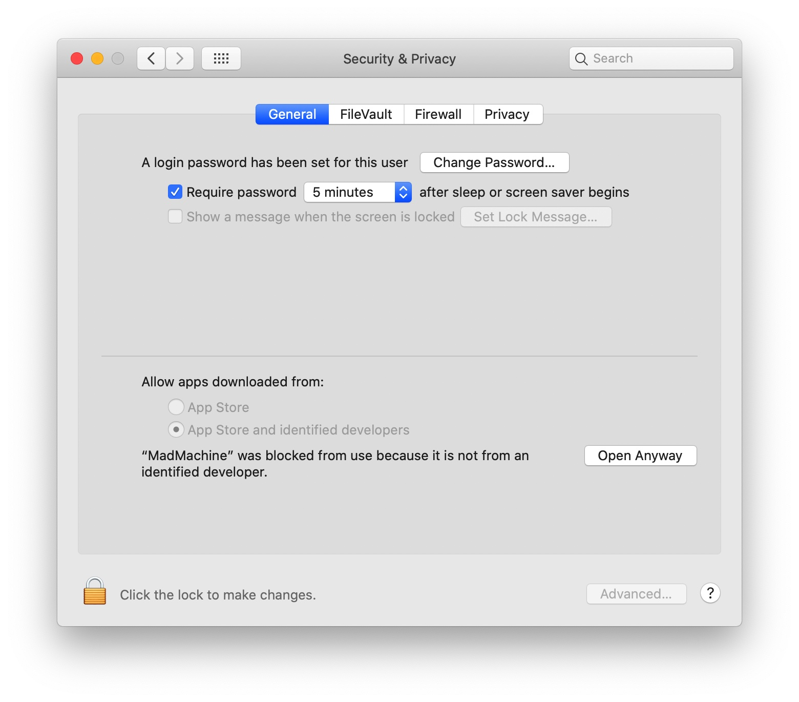
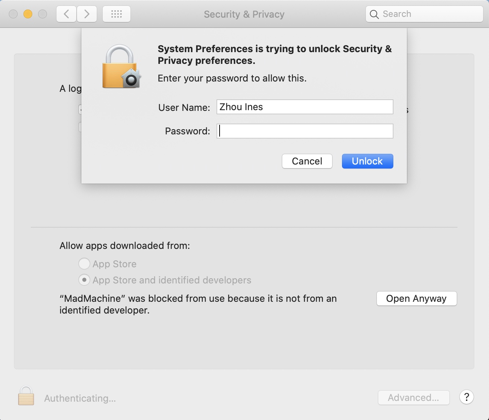
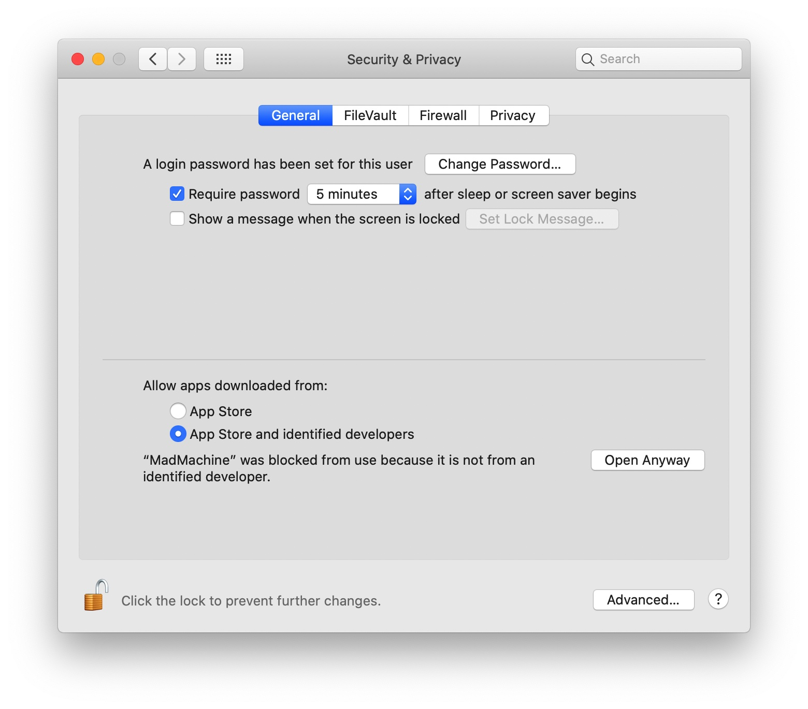
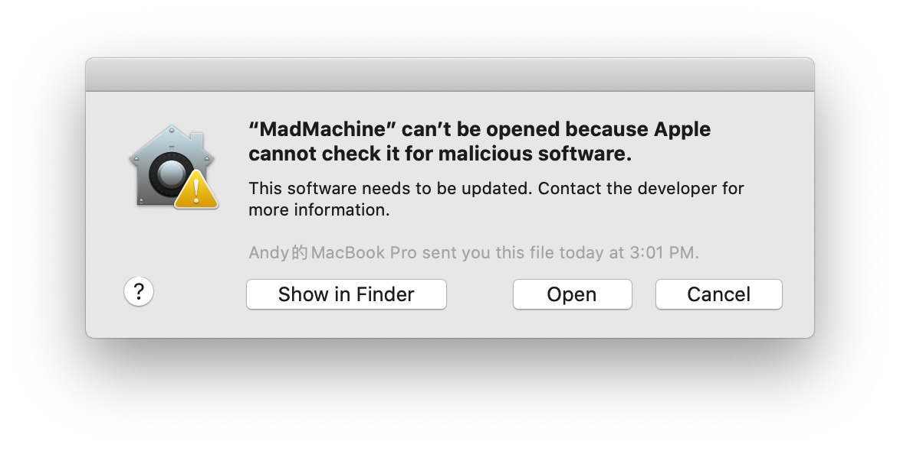
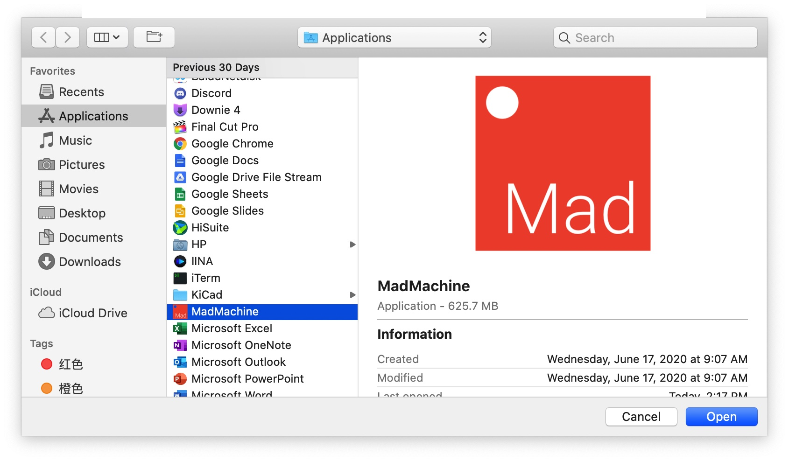

FAQ
Can't install the IDE on Win10
Windows may not recognize the IDE and there might be some problems when you install it. Windows Defender will pop up with a warning message.

First, click on the "More info".
Then more info will appear. Click "Run anyway".
Can't open IDE on Mac
When you want to open the IDE, a new window appears:

👇 Here comes the solution:
- click OK.
- select
 > System Preferences
> System Preferences - open the Security & Privacy Preferences pane
- select the General tab

- click the 🔒 icon
- enter your Password
- click Unlock

- click Open Anyway

- click Open

Now the IDE can run normally.

Can't create new project on Windows
Reason: The IDE need to copy MadMachine\Examples and MadMachine\Library to your Documents directory when running for the first time.
Solve: Please make sure run the IDE as Administrator for the first time!
IDE can't find the USB drive
This is due to the security feature of macOS.
The latest versions of macOS introduce new security control. There are more requirements for application security.
While our board needs to manage the files on the USB driver. So you need to enable Full Disk Access for IDE.
- select System Preferences in Apple menu
- open the Security & Privacy Preferences pane
- select the Privacy tab
- click Full Disk Access in the left column

- click the 🔒 icon
- enter your Password
- click Unlock

- click the icon +

- click Application
- find the MadMachine
- click Open

- click Quit Now

Now you can try to download your project again.
SwiftIO board reset repeatedly
There is a maximum current limit for the USB port of your devices.
While some modules which is connected to the board may require a larger one.
Thus the board reset over and over again.
You can try these ways:
1 **connect the board to USB port that can output larger power.
2 connect both download port and serial port on the board to USB ports
3 use a power bank to supply the board
USB driver can't be mounted
Bad quality microUSB cable or third-party USB hub may cause this problem.
Just change it to a better one, and try again.